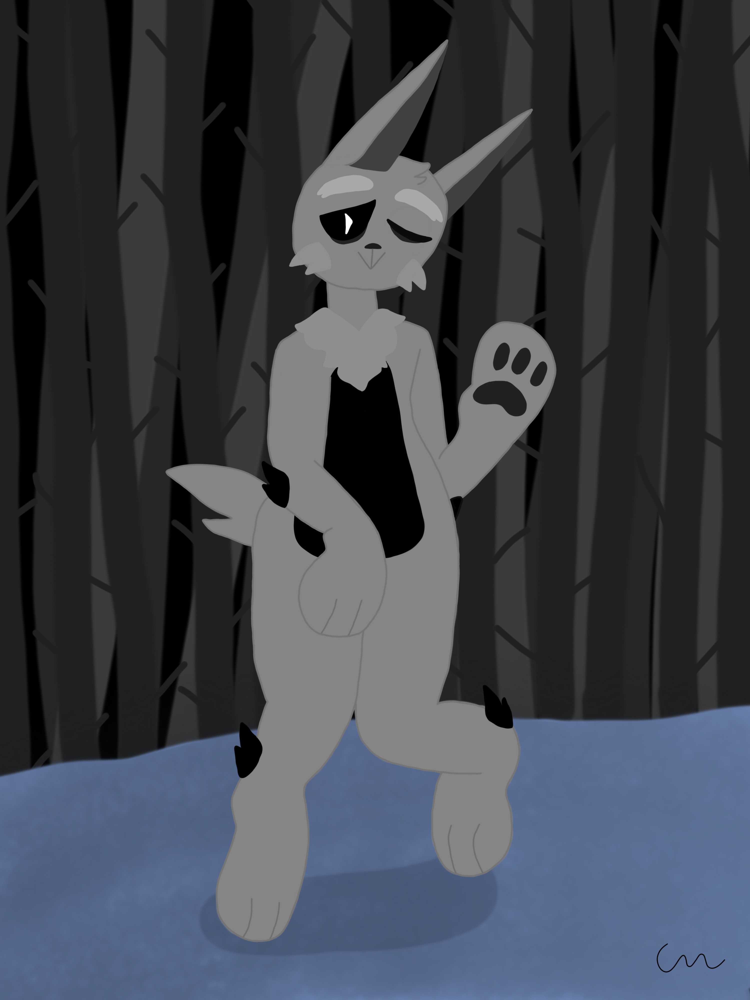
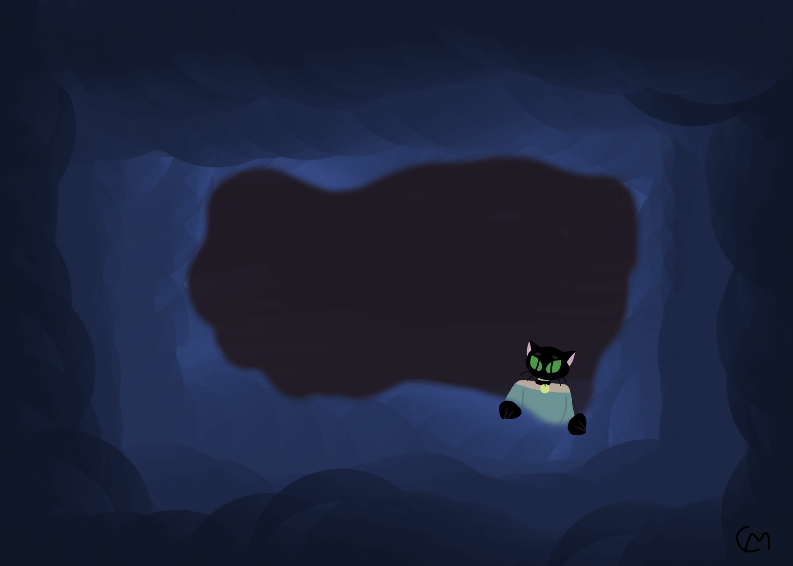

Older Works
Dark Rabbit
Used to be an Undertale oc, Febuary 13,2019
I created this on my phone with an older drawing app. The character was first drawn on a piece a paper first however. It was really fun drawing this pose because it came out just like I imagined and I really loved this character's design. Nowadays he looks a little diffrent. This is due to me changing up his backstory into more of a mad scientist, which I think is more intresting. Anyway,the background is referenced from Undertale and is one of my favorite backgrounds i've ever drawn.
Lucky
Cat boy doodle, October 17,2019
Created on accident when I was bored so I decided to mess around in Photoshop. I created the cloudy gradient first, then drew the cat boy on a separate layer. I don't have to much backstory on this character as he was just a happy accident, but he was really fun to draw as he has such a cartoony styled head.
Timathy
A very good boy, September 1,2020

He was first a easy to draw blob, then I decided to give him a more complicated design in the way I usually draw characters. Timathy was made on my sister's birthday when I wanted to draw funny pictures for her. So, he is now two years old, I think, and he is now one of my many joke characters that I see as my children.